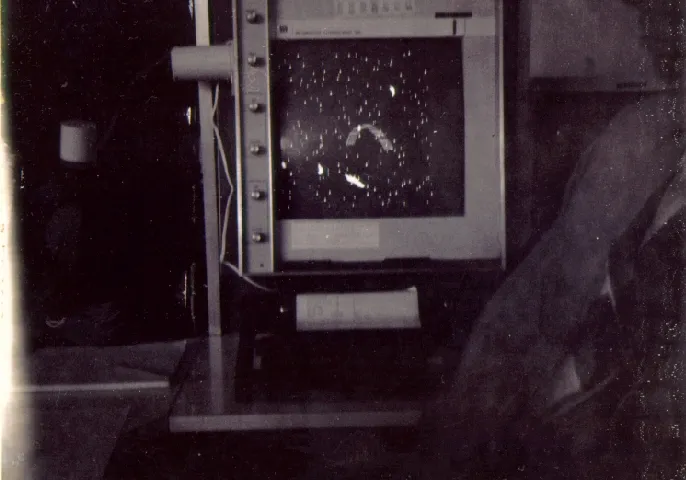

Spacewar!: an overview

Why this game, and why then
That the first widely played video game should stage a duel in space was, as Kline, Dyer-Witheford and de Peuter put it, "no coincidence". The Soviet Sputnik launch of 1957 had shaken the United States' confidence in its technological lead, and money poured into missilery, ballistics and space defence, much of it routed through the Pentagon's Advanced Research Projects Agency (ARPA), the institution that would underwrite so much of early digital culture. The PDP-1 itself came from the Digital Equipment Corporation, one of a cluster of firms, with IBM, General Electric, Sperry Rand and Raytheon, sustained by defence contracts; MIT's Artificial Intelligence group, founded in 1959, was a primary beneficiary of ARPA's largesse. Spacewar! was written inside that military-industrial-academic complex, on a machine and in a laboratory it had paid for, and it turns the very imagery of the arms race, rockets, trajectories and mutual destruction, into play.
It was also, immediately, a creature of its culture. Steve Russell drew the game from the pulp science fiction of the moment, above all E. E. "Doc" Smith's Lensman novels of intergalactic combat, in a decade when Asimov and others were offering the baby-boom generation an optimistic, cybernetic future to set against Orwell's 1984. Russell himself doubted the game was wholly his own invention: had he not made it, he said, someone else would have, because it was so much a part of "the 'moment' in early computer circles", a convergence of cybernetics, artificial-intelligence research, simulation and science fiction.
What is on the screen
The screen holds two ships, drawn as outline shapes and nicknamed the needle and the wedge so players could tell them apart, a single bright star at the centre, and a scatter of background stars, Peter Samson's Expensive Planetarium, an accurate map of the real night sky. Each ship can rotate left or right, fire its engine for thrust, launch torpedoes, and enter hyperspace. The central star exerts gravity on the ships, curving their paths, so the game is played in a constant gravitational field rather than empty space. Fuel for thrust and the supply of torpedoes are both limited, and torpedoes take time to reload, so the duel is a contest of momentum, position and patience as much as aim.

What made the game a genuine novelty was less its fiction than its two basic operations. Earlier computers, vast and costly, had been built for abstract calculation; Spacewar! instead used hand controls for navigation and turned the screen into a live graphic display, the player reading the action and steering in real time. Kline, Dyer-Witheford and de Peuter call these "two crucial operations... navigation and display" the foundation of digital interactive entertainment, the core design that later hardware and software would refine across generations of games.
Strategy
The star is at the centre of the game. Because it pulls on both ships, the central skill is the gravity turn: a pilot can swing close to the star and let its pull whip the ship around at speed, a slingshot that costs no fuel, but a misjudged approach ends in a collision with the star and death. Good players orbit, using gravity to line up shots while their opponent struggles with the same pull. In the original the torpedoes fly straight, unaffected by gravity, so leading a moving, curving target is a real skill.
Fuel limits how much you can thrust, so reckless acceleration leaves you adrift; torpedoes are finite and reload slowly, so spraying them is fatal; and hyperspace is the panic button, written by Martin Graetz, that flings your ship to a random new position, escaping an incoming torpedo, but it reappears unpredictably and, in the spirit of the thing, carried a small chance of the ship exploding on re-entry. The good player treats hyperspace as a last resort, not a tactic. Sense switches on the console let players turn options on and off, gravity, the background star field, and the way ships wrap or vanish at the screen edge, so the game had variations even in 1962.
What it was like
Part of the game is the hardware. On the Type 30 display, every object is a pattern of plotted points held briefly by a long-persistence P7 phosphor, so ships and torpedoes glow and trail, and the central star smears into a soft sun. Players first worked the game from the console toggle switches, awkward and uncomfortably close to the warm machine, until Alan Kotok and Bob Saunders built the famous detached control boxes, the shape of whose controls, rotate, thrust, fire, hyperspace, is a direct response to what the PDP-1 offered. To play Spacewar! on a real PDP-1 is to play inside the glow of a specific screen, with a specific feel: something the browser emulation can only gesture towards. The experience of the game was very much part of the materiality of the machine, material in the sense Friedrich Kittler gave to media technologies, whose hardware conditions what can be shown, sensed and done (Kittler 1999).1
1 Cf. Friedrich Kittler, "There Is No Software", in Literature, Media, Information Systems (1997); and, on media archaeology, Wolfgang Ernst, Digital Memory and the Archive (2013). ↩
Reading the game in depth
Each part of Spacewar! opens onto its own reading:
- The code: how the game is built from the PDP-1's instruction set, the redraw loop, and the
dpydisplay instruction, with a live instruction-set lookup. - The versions: there is no single Spacewar!. A variorum of the surviving sources from 1962–63, gravity added in one, the on-screen score in another, each a different reading of the game.
- The people: who conceived, wrote, extended and preserved it, and whom the record leaves out.
- The long journey: the survey of ports and commercial descendants, from Cambridge and Stanford to Computer Space and the arcade.
- Play it: the 1962 original, running in your browser on an emulated PDP-1.
For why any of this matters to a critical reading of code, see why this project, and the Critical Code Studies approach.
References
- J. M. Graetz, "The Origin of Spacewar" (Creative Computing, August 1981), the principal first-hand account of the game's design and play.
- Norbert Landsteiner, Inside Spacewar!, masswerk.at, on the mechanics, the sense-switch options and the display.
- Computer History Museum, Spacewar! and the PDP-1 Restoration Project.
- Stephen Kline, Nick Dyer-Witheford and Greig de Peuter, Digital Play: The Interaction of Technology, Culture, and Marketing (McGill-Queen's University Press, 2005), on the Cold War context, the play ethic, and Spacewar! as core design.
- Friedrich A. Kittler, Gramophone, Film, Typewriter (Stanford University Press, 1999), and "There Is No Software" (in Literature, Media, Information Systems, 1997), on the materiality of media technologies and the hardware that conditions them.
- Wolfgang Ernst, Digital Memory and the Archive (University of Minnesota Press, 2013), on media archaeology and the technical operativity of machines.